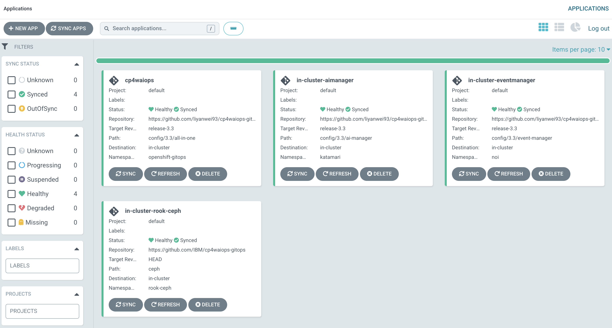
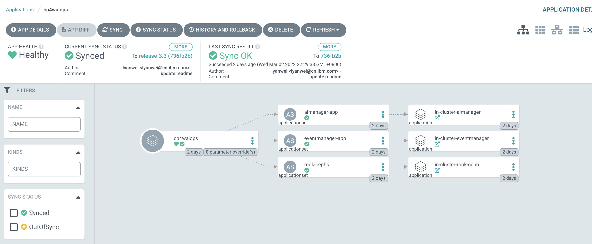
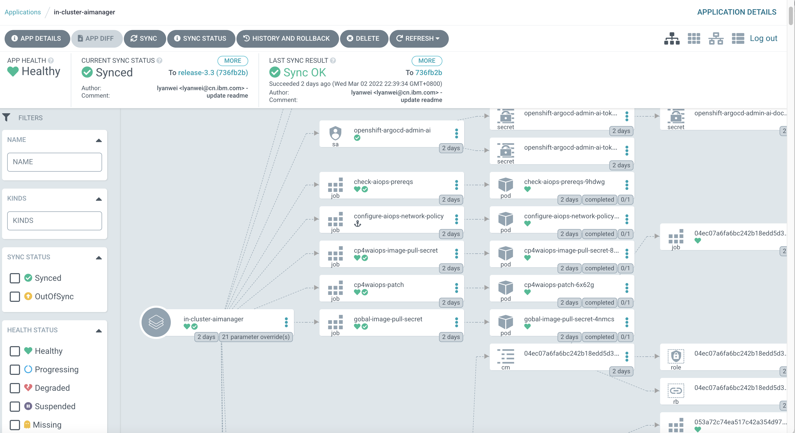
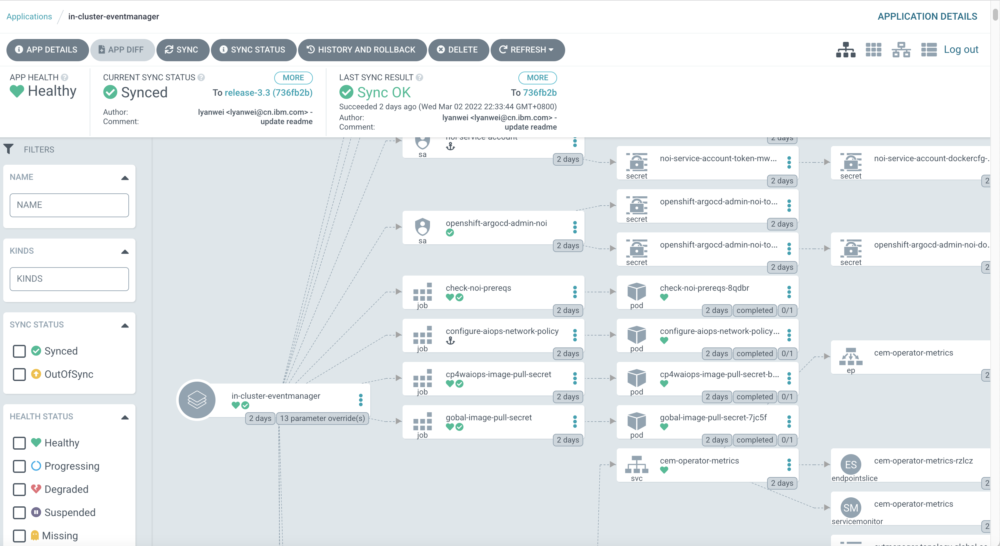

Table of Contents generated with DocToc
- Deploy CP4WAIOps 3.3 using GitOps
- Prerequisite
- Install CP4WAIOps from UI
- Login to Argo CD
- Storage Considerations
- Option 1: Install AI Manager and Event Manager Separately
- Grant Argo CD Cluster Admin Permission
- Install AI Manager
- Install Event Manager
- Option 2: Install Using All-in-One Configuration
- Install AI Manager and Event Manager in One Go
- Install CP4WAIOps using Custom Build
- Verify CP4WAIOps Installation
- Access CP4WAIOps
- Install CP4WAIOps from Command Line
Deploy CP4WAIOps 3.3 using GitOps¶
⚠️ NOTE: This is a TECHNICAL PREVIEW feature for IBM Cloud Pak for Watson AIOps 3.3 release!
Prerequisite¶
- To learn CP4WAIOps system requirement, please refer to System requirements for Cloud Pak for Watson AIOps 3.3.
- To install OpenShift GitOps (Argo CD) on OpenShift cluster, please refer to Installing OpenShift GitOps.
Install CP4WAIOps from UI¶
Login to Argo CD¶
You can now login to Argo CD UI as follows by clicking the drop down menu on top right.

Argo CD UI will be popped up and you can login using LOG IN VIA OPENSHIFT.

Storage Considerations¶
If your OpenShift cluster already have default storageclass configured, you can ignore this step. To learn more on storage considerations for CP4WAIOps, please refer to Storage Considerations.
In this tutorial, we are using use Ceph just for PoC purpose, but NOT for production. You should always follow storage based on CP4WAIOPS requirements at Storage Considerations.
From Argo CD UI, click NEW APP and input parameters as follows for Ceph and then click CREATE button.
- GENERAL
- Application Name: ceph
- Project: default
- SYNC POLICY: Automatic
- SOURCE
- Repository URL : https://github.com/IBM/cp4waiops-gitops
- Revision: HEAD
- path: config/ceph
- DESTINATION
- Cluster URL: https://kubernetes.default.svc
- Namespace: rook-ceph

After Argo CD App ceph is created, you can click the App from Argo CD UI to view the toplogy of all Ceph resources as follows:

You can use the filters on the left to filter out the resources, and click the resource to check logs and events.

You can also check all Ceph pods from command line as follows to make sure there is no pod in error state. If there are some pods in error state, you can check logs using kubectl logs.
[root@api.body.cp.fyre.ibm.com ~]# kubectl get po -n rook-ceph
NAME READY STATUS RESTARTS AGE
csi-cephfsplugin-7b6jk 3/3 Running 0 2d
csi-cephfsplugin-l7mvz 3/3 Running 0 2d
csi-cephfsplugin-provisioner-695b574445-gfcwz 6/6 Running 6 2d
csi-cephfsplugin-provisioner-695b574445-lb64p 6/6 Running 7 2d
csi-cephfsplugin-qcsqz 3/3 Running 0 2d
csi-cephfsplugin-qdrtl 3/3 Running 0 2d
csi-cephfsplugin-wj7qq 3/3 Running 0 2d
csi-cephfsplugin-xlsnb 3/3 Running 0 2d
csi-rbdplugin-8xwdb 3/3 Running 0 2d
csi-rbdplugin-b6t9l 3/3 Running 0 2d
csi-rbdplugin-h965f 3/3 Running 0 2d
csi-rbdplugin-lv2hp 3/3 Running 0 2d
csi-rbdplugin-pqvrc 3/3 Running 0 2d
csi-rbdplugin-provisioner-7f9847cd48-48gqk 6/6 Running 0 2d
csi-rbdplugin-provisioner-7f9847cd48-wxh2z 6/6 Running 12 2d
csi-rbdplugin-x8cw9 3/3 Running 0 2d
rook-ceph-crashcollector-worker0.body.cp.fyre.ibm.com-88f5bnbdc 1/1 Running 0 2d
rook-ceph-crashcollector-worker1.body.cp.fyre.ibm.com-d4c7gdcts 1/1 Running 0 2d
rook-ceph-crashcollector-worker2.body.cp.fyre.ibm.com-7767p8fxm 1/1 Running 0 2d
rook-ceph-crashcollector-worker3.body.cp.fyre.ibm.com-6c5cqs4lk 1/1 Running 0 2d
rook-ceph-crashcollector-worker4.body.cp.fyre.ibm.com-787f99czf 1/1 Running 0 2d
rook-ceph-crashcollector-worker5.body.cp.fyre.ibm.com-94d4b654q 1/1 Running 0 2d
rook-ceph-mds-myfs-a-7d48d48497-sbhld 1/1 Running 0 2d
rook-ceph-mds-myfs-b-66f4b746c7-2fnl2 1/1 Running 0 2d
rook-ceph-mgr-a-5c84cd7b7b-574lf 1/1 Running 0 2d
rook-ceph-mon-a-7b947ddf45-74p49 1/1 Running 0 2d
rook-ceph-mon-b-7cf885c589-5j6r9 1/1 Running 0 2d
rook-ceph-mon-c-bcb6575d8-g9l5w 1/1 Running 0 2d
rook-ceph-operator-54649856c4-cdx24 1/1 Running 0 2d
rook-ceph-osd-0-c44985597-gwkqk 1/1 Running 0 2d
rook-ceph-osd-1-6f7d5cc955-v4862 1/1 Running 0 2d
rook-ceph-osd-2-58df99c46f-5kl8z 1/1 Running 0 2d
rook-ceph-osd-3-5c8579456c-bpcqz 1/1 Running 0 2d
rook-ceph-osd-4-5668c69fbf-kvdf6 1/1 Running 0 2d
rook-ceph-osd-5-cbbdb95-cqvjd 1/1 Running 0 2d
rook-ceph-osd-prepare-worker0.body.cp.fyre.ibm.com-bxr7t 0/1 Completed 0 4h16m
rook-ceph-osd-prepare-worker1.body.cp.fyre.ibm.com-fftd8 0/1 Completed 0 4h16m
rook-ceph-osd-prepare-worker2.body.cp.fyre.ibm.com-scg84 0/1 Completed 0 4h16m
rook-ceph-osd-prepare-worker3.body.cp.fyre.ibm.com-m488b 0/1 Completed 0 4h16m
rook-ceph-osd-prepare-worker4.body.cp.fyre.ibm.com-dxcm5 0/1 Completed 0 4h16m
rook-ceph-osd-prepare-worker5.body.cp.fyre.ibm.com-jclnq 0/1 Completed 0 4h16m
Option 1: Install AI Manager and Event Manager Separately¶
Grant Argo CD Cluster Admin Permission¶
From Red Hat OpenShift Console, go to User Management > RoleBindings > Create binding. Use the form view to configure the properties for the ClusterRoleBinding with values as follows, and click the Create button.
- Binding type
- Cluster-wide role binding (ClusterRoleBinding)
- RoleBinding
- Name: argocd-admin
- Role
- Role Name: cluster-admin
- Subject
- ServiceAccount: check it
- Subject namespace: openshift-gitops
- Subject name: openshift-gitops-argocd-application-controller
Install AI Manager¶
You can install CP4WAIOps - AI Manager using GitOps by creating an Argo CD App. The parameters for AI Manager are as follows:
- GENERAL
- Application Name: anyname (e.g.: "aimanager-app")
- Project: default
- SYNC POLICY: Automatic
- SOURCE
- Repository URL : https://github.com/IBM/cp4waiops-gitops
- Revision: HEAD
- path: config/3.3/ai-manager
- DESTINATION
- Cluster URL: https://kubernetes.default.svc
- Namespace: cp4waiops
- PARAMETERS
- spec.imageCatalog: icr.io/cpopen/ibm-operator-catalog:latest
- spec.dockerUsername: cp
- spec.dockerPassword: REPLACE_IT
- spec.storageClass: rook-cephfs
- spec.storageClassLargeBlock: rook-cephfs
- spec.aiManager.channel: v3.3
- spec.aiManager.size: small
- spec.aiManager.namespace: cp4waiops
- spec.aiManager.pakModules.aiopsFoundation.enabled: true
- spec.aiManager.pakModules.applicationManager.enabled: true
- spec.aiManager.pakModules.aiManager.enabled: true
- spec.aiManager.pakModules.connection.enabled: true
NOTE:
- For
Repository URLandRevisionfield, if you use a repository forked from the official CP4WAIOps GitOps repository and/or on a different branch, please fill these fields using your own values. For example, if you usehttps://github.com/<myaccount>/cp4waiops-gitopsanddevbranch, the two fields need to be changed accordingly. - For
spec.dockerPassword, it is the entitlement key that you can copy from My IBM Container Software Library.
Install Event Manager¶
You can install CP4WAIOps - Event Manager using GitOps by creating an Argo CD App. The parameters for Event Manager are as follows:
- GENERAL
- Application Name: anyname (e.g.: "eventmanager-app")
- Project: default
- SYNC POLICY: Automatic
- SOURCE
- Repository URL : https://github.com/IBM/cp4waiops-gitops
- Revision: HEAD
- path: config/3.3/event-manager
- DESTINATION
- Cluster URL: https://kubernetes.default.svc
- Namespace: noi
- PARAMETERS
- spec.imageCatalog: icr.io/cpopen/ibm-operator-catalog:latest
- spec.dockerUsername: cp
- spec.dockerPassword: REPLACE_IT
- spec.storageClass: rook-cephfs
- spec.storageClassLargeBlock: rook-cephfs
- spec.eventManager.version: 1.6.4
- spec.eventManager.clusterDomain: REPLACE_IT
- spec.eventManager.channel: v1.7
- spec.eventManager.deploymentType: trial
- spec.eventManager.namespace: noi
NOTE:
- For
Repository URLandRevisionfield, if you use a repository forked from the official CP4WAIOps GitOps repository and/or on a different branch, please fill these fields using your own values. For example, if you usehttps://github.com/<myaccount>/cp4waiops-gitopsanddevbranch, the two fields need to be changed accordingly. - For
spec.dockerPassword, it is the entitlement key that you can copy from My IBM Container Software Library. - For
spec.eventManager.clusterDomain, it is the domain name of the cluster where Event Manager is installed. Use fully qualified domain name (FQDN), e.g.: apps.clustername.abc.xyz.com.
Option 2: Install Using All-in-One Configuration¶
Install AI Manager and Event Manager in One Go¶
The all-in-one configuration allows you to install following components in one go:
- Ceph storage (optional)
- AI Manager
- Event Manager
Just fill in the form using the suggested field values listed in following table when you create the Argo CD App:
| Field | Value |
|---|---|
| Application Name | anyname (e.g. cp4waiops-app) |
| Project | default |
| Sync Policy | Automatic |
| Repository URL | https://github.com/IBM/cp4waiops-gitops |
| Revision | HEAD |
| Path | config/all-in-one |
| Cluster URL | https://kubernetes.default.svc |
| Namespace | openshift-gitops |
Besides the basic information, when filling in the form, you can also update the following install parameters that are commonly used to customize the install behavior.
| Parameter | Type | Default Value | Description |
|---|---|---|---|
| argocd.cluster | string | openshift | The type of the cluster that Argo CD runs on, valid values include: openshift, kubernetes. |
| argocd.allowLocalDeploy | bool | true | Allow apps to be deployed on the same cluster where Argo CD runs. |
| rookceph.enabled | bool | true | Specify whether or not to install Ceph as storage used by CP4WAIOps. |
| cp4waiops.version | string | v3.3 | Specify the version of CP4WAIOps, e.g.: v3.2, v3.3. |
| cp4waiops.profile | string | small | The CP4WAIOps deployment profile, e.g.: x-small, small, large. |
| cp4waiops.dockerUsername | string | cp | The username of image registry used to pull images. |
| cp4waiops.dockerPassword | string | REPLACE_IT | The password of image registry used to pull images. |
| cp4waiops.aiManager.enabled | bool | true | Specify whether or not to install AI Manager. |
| cp4waiops.aiManager.namespace | string | cp4waiops | The namespace where AI Manager is installed. |
| cp4waiops.aiManager.instanceName | string | aiops-installation | The instance name of AI Manager. |
| cp4waiops.eventManager.enabled | bool | true | Specify whether or not to install Event Manager. |
| cp4waiops.eventManager.namespace | string | noi | The namespace where Event Manager is installed. |
| cp4waiops.eventManager.clusterDomain | string | REPLACE_IT | The domain name of the cluster where Event Manager is installed. |
NOTE:
- For
cp4waiops.dockerPassword, it is the entitlement key that you can copy from My IBM Container Software Library. - For
cp4waiops.profile, the profilex-smallis only for demo, PoC, or dev environment. If you are looking for official installation, use profile such assmallorlargeinstead. - For
cp4waiops.eventManager.enabled, it needs to be false if you usex-smallprofile as it only covers AI Manager, not including Event Manager. - For
cp4waiops.eventManager.clusterDomain, it is the domain name of the cluster where Event Manager is installed. Use fully qualified domain name (FQDN), e.g.: apps.clustername.abc.xyz.com.
Install CP4WAIOps using Custom Build¶
The all-in-one configuration also allows you to install CP4WAIOps using custom build by providing specific image catalog and channel.
Just use the install parameters listed in following table when you create the Argo CD App:
| Parameter | Type | Default Value | Description |
|---|---|---|---|
| cp4waiops.aiManager.imageCatalog | string | icr.io/cpopen/ibm-operator-catalog:latest | The image catalog for AI Manager. |
| cp4waiops.aiManager.channel | string | v3.3 | The subscription channel for AI Manager. |
| cp4waiops.eventManager.imageCatalog | string | icr.io/cpopen/ibm-operator-catalog:latest | The image catalog for Event Manager. |
| cp4waiops.eventManager.channel | string | v1.7 | The subscription channel for Event Manager. |
These parameters are invisible when you create the Argo CD App from UI, but you can add them when filling in the form in HELM > VALUES field.
For example, adding following YAML snippet to HELM > VALUES field will install AI Manager and Event Manager using custom imageCatalog and channel:
cp4waiops:
aiManager:
imageCatalog: <my_custom_image_catalog_for_ai_manager>
channel: <my_custom_channel_for_ai_manager>
eventManager:
imageCatalog: <my_custom_image_catalog_for_event_manager>
channel: <my_custom_channel_for_event_manager>
````
Besides that, the all-in-one configuration exposes a few more install parameters invisible from UI that allows you to customize the install behavior in a more fine-grained manner. Below is just a list of some available parameters. To learn more on the usage of such parameters, please refer to [CP4WAIOps Advanced Install Options Using GitOps](./cp4waiops-advanced-install-options.md).
| Parameter | Type | Default Value | Description
| ------------------------------------- |--------|---------------|-----------------------------------
| cp4waiops.storageClass | string | rook-cephfs | The storage class for CP4WAIOps to use.
| cp4waiops.storageClassLargeBlock | string | rook-cephfs | The storage class for large block for CP4WAIOps to use.
| cp4waiops.eventManager.version | string | 1.6.4 | The version of Event Manager.
| cp4waiops.eventManager.deploymentType | string | trial | The deployment type of Event Manager, valid values include: trial, production.
| globalImagePullSecrets | array | n/a | A list of registries for image pull when needed during the install.
For example, if the custom build to be installed includes images from registries other than the official IBM entitled registry, you can use `globalImagePullSecrets` to specify all necessary information for these registries including registry URLs, as well as username and password to access these registries.
Again, since these parameters are invisible, you can add them when filling in the form in `HELM` > `VALUES` field:
```yaml
globalImagePullSecrets:
- registry: <my_own_registry_1>
username: <username_to_registry_1>
password: <password_to_registry_1>
- registry: <my_own_registry_2>
username: <username_to_registry_2>
password: <password_to_registry_2>
Verify CP4WAIOps Installation¶
After both Ceph and CP4WAIOps are ready, you will be able to see those Apps from Argo CD UI as follows with status as Healthy and Synced.


You can check the topology of CP4WAIOps using Argo CD UI as follows:


You can also check from command line as follows, and make sure there are no error pods. If there are some pods in error state, you can check logs either from Argo CD UI or using kubectl logs from command line.
For example, to check pods of AI Manager:
[root@api.body.cp.fyre.ibm.com ~]# kubectl get po -n cp4waiops
NAME READY STATUS RESTARTS AGE
aimanager-aio-ai-platform-api-server-7c877989d6-7jh55 1/1 Running 0 47h
aimanager-aio-change-risk-654884bd8c-6xpxw 1/1 Running 0 47h
aimanager-aio-chatops-orchestrator-7c54fc5664-rtmrp 1/1 Running 0 47h
aimanager-aio-chatops-slack-integrator-77fc9499c4-wtclt 1/1 Running 0 47h
aimanager-aio-chatops-teams-integrator-577f6b85bf-j2995 1/1 Running 0 47h
aimanager-aio-controller-86875d4b7-jfwwp 1/1 Running 0 47h
aimanager-aio-create-secrets-ccjdg 0/1 Completed 0 47h
aimanager-aio-create-truststore-5hxps 0/1 Completed 0 47h
aimanager-aio-curator-job-27362220-k59t8 0/1 Completed 0 142m
aimanager-aio-curator-job-27362280-n2w88 0/1 Completed 0 82m
aimanager-aio-curator-job-27362340-qkwln 0/1 Completed 0 22m
aimanager-aio-log-anomaly-detector-fdfcbb96b-rpb9q 1/1 Running 0 47h
aimanager-aio-log-anomaly-detector-fdfcbb96b-v426m 1/1 Running 0 47h
aimanager-aio-similar-incidents-service-77cc9d699f-qlxgg 1/1 Running 0 47h
aimanager-ibm-minio-0 1/1 Running 0 47h
aimanager-operator-585d799f9f-w22vz 1/1 Running 0 47h
aiops-ai-model-ui-674b4f77f9-qv56n 1/1 Running 0 47h
aiops-akora-ui-7bc6d5dd6b-6n9rs 1/1 Running 0 47h
aiops-application-details-ui-66779f957b-fqfhk 1/1 Running 0 47h
aiops-base-ui-5b9f885888-pvm7z 1/1 Running 0 47h
aiops-connections-ui-7996699c55-m79fl 1/1 Running 0 47h
aiops-ir-analytics-classifier-75869fd78b-p2s9v 1/1 Running 0 47h
aiops-ir-analytics-probablecause-6dd5ffd867-rrg6b 1/1 Running 2 47h
aiops-ir-analytics-spark-master-5cd57946d4-99bqt 1/1 Running 0 47h
aiops-ir-analytics-spark-pipeline-composer-795f965b6d-vkjqw 1/1 Running 0 47h
aiops-ir-analytics-spark-worker-65d57f7f9c-4nsb8 1/1 Running 0 47h
aiops-ir-core-archiving-754dcb5fcb-jm82z 1/1 Running 0 47h
aiops-ir-core-archiving-setup-rrlkh 0/1 Completed 0 47h
aiops-ir-core-cem-users-65b9b699b9-hzh9b 1/1 Running 0 47h
aiops-ir-core-esarchiving-67dbb7c5d7-wg7dx 1/1 Running 0 47h
aiops-ir-core-logstash-6c89d66f79-tlfcl 1/1 Running 0 47h
aiops-ir-core-ncobackup-0 2/2 Running 0 47h
aiops-ir-core-ncodl-api-59f977b475-lx7n4 1/1 Running 0 47h
aiops-ir-core-ncodl-if-66cf44c565-lkkgx 1/1 Running 0 47h
aiops-ir-core-ncodl-ir-7469fd4866-wjfvf 1/1 Running 0 47h
aiops-ir-core-ncodl-jobmgr-76d74b5567-t77wc 1/1 Running 0 47h
aiops-ir-core-ncodl-setup-8hx6c 0/1 Completed 0 47h
aiops-ir-core-ncodl-std-7677546c8d-dbqm9 1/1 Running 0 47h
aiops-ir-core-ncodl-std-7677546c8d-wf82d 1/1 Running 0 47h
aiops-ir-core-ncoprimary-0 1/1 Running 0 47h
aiops-ir-lifecycle-create-policies-job-dljxp 0/1 Completed 0 47h
aiops-ir-lifecycle-eventprocessor-ep-jobmanager-0 2/2 Running 0 47h
aiops-ir-lifecycle-eventprocessor-ep-taskmanager-0 1/1 Running 0 47h
aiops-ir-lifecycle-logstash-77579f5d7f-9rhsx 1/1 Running 0 47h
aiops-ir-lifecycle-policy-grpc-svc-6b59698569-cvhvq 1/1 Running 0 47h
aiops-ir-lifecycle-policy-registry-svc-68647d4cdc-t27mw 1/1 Running 0 47h
aiops-ir-lifecycle-policy-registry-svc-job-8gk89 0/1 Completed 3 47h
aiops-ir-ui-api-graphql-68488c7675-87mbp 1/1 Running 0 47h
aiops-topology-cassandra-0 1/1 Running 0 47h
aiops-topology-cassandra-auth-secret-generator-7mm84 0/1 Completed 0 47h
aiops-topology-file-observer-5757769dd5-xxc8j 1/1 Running 0 47h
aiops-topology-kubernetes-observer-d4c8bcb55-ddbcg 1/1 Running 0 47h
aiops-topology-layout-6b957b5bbb-m28rd 1/1 Running 0 47h
aiops-topology-merge-76c494795f-5b65g 1/1 Running 0 47h
aiops-topology-observer-service-6f5d6fb44b-jswwp 1/1 Running 0 47h
aiops-topology-rest-observer-799bfdf4c8-5nt6n 1/1 Running 0 47h
aiops-topology-search-6cd7cc9d8-64bdk 1/1 Running 0 47h
aiops-topology-secret-manager-2b84s 0/1 Completed 0 47h
aiops-topology-servicenow-observer-84c588df5b-gm6p2 1/1 Running 0 47h
aiops-topology-status-58ddcdc845-mqpzg 1/1 Running 0 47h
aiops-topology-topology-577b988f78-kc2m6 1/1 Running 2 47h
aiops-topology-ui-api-bbd74965d-gzlfd 1/1 Running 0 47h
aiops-topology-vmvcenter-observer-86b6c8dc44-krvtj 1/1 Running 0 47h
aiopsedge-github-topology-integrator-7b9db59cd8-nbdgz 1/1 Running 0 47h
aiopsedge-operator-controller-manager-9b68ddd75-5rqqz 1/1 Running 1 47h
aiopsedge-operator-controller-manager-9b68ddd75-xj7tq 1/1 Running 1 47h
asm-operator-548c8894fd-r2dgv 1/1 Running 0 47h
c-example-couchdbcluster-m-0 3/3 Running 0 47h
c-example-redis-m-0 4/4 Running 0 47h
c-example-redis-m-1 4/4 Running 0 47h
c-example-redis-m-2 4/4 Running 0 47h
c-example-redis-s-0 4/4 Running 0 47h
c-example-redis-s-1 4/4 Running 0 47h
c-example-redis-s-2 4/4 Running 0 47h
camel-k-kit-c7c60rolvegv49tvh8fg-1-build 0/1 Completed 0 47h
camel-k-kit-c7c60sglvegv49tvh8g0-1-build 0/1 Completed 0 47h
camel-k-kit-c7c60tglvegv49tvh8gg-1-build 0/1 Completed 0 47h
camel-k-kit-c7c60tolvegv49tvh8h0-1-build 0/1 Completed 0 47h
camel-k-operator-684f46fc4d-s6hf2 1/1 Running 0 47h
configure-aiops-network-policy-967ll 0/1 Completed 0 47h
connector-controller-bc7fc6668-f8nn5 1/1 Running 0 47h
connector-synchronizer-7d4546ddd4-5kbrl 1/1 Running 0 47h
couchdb-operator-d5cb7ff8c-rjnhx 1/1 Running 0 47h
cp4waiops-eventprocessor-eve-29ee-ep-jobmanager-0 2/2 Running 0 47h
cp4waiops-eventprocessor-eve-29ee-ep-jobmanager-1 2/2 Running 0 47h
cp4waiops-eventprocessor-eve-29ee-ep-taskmanager-0 1/1 Running 1 47h
cp4waiops-eventprocessor-eve-29ee-ep-taskmanager-1 1/1 Running 0 47h
cp4waiops-image-pull-secret-6fprf 0/1 Completed 0 2d
cp4waiops-patch-j4qrm 0/1 Completed 0 2d
cp4waiops-postgres-keeper-0 1/1 Running 0 47h
cp4waiops-postgres-postgresql-create-cluster-7xb6t 0/1 Completed 0 47h
cp4waiops-postgres-proxy-648bc64fd-x4mvv 1/1 Running 0 47h
cp4waiops-postgres-sentinel-5878f67f46-gvv7l 1/1 Running 0 47h
cp4waiops-postgresdb-postgresql-create-database-9j6kq 0/1 Completed 0 47h
create-secrets-job-nx6dg 0/1 Completed 0 47h
gateway-kong-5d45b77fb4-tgjcv 2/2 Running 2 47h
gateway-kong-config-svc-27362360-9dmzc 0/1 Completed 0 2m51s
iaf-core-operator-controller-manager-58dfd97f5c-bdd9t 1/1 Running 0 2d
iaf-eventprocessing-operator-controller-manager-5bc597797f6fxm4 1/1 Running 1 2d
iaf-flink-operator-controller-manager-7dc56c9b68-6rgtk 1/1 Running 0 2d
iaf-operator-controller-manager-6bc8f44ff7-rrrnx 1/1 Running 0 2d
iaf-system-elasticsearch-es-aiops-0 2/2 Running 0 47h
iaf-system-entity-operator-6b5444f575-7tdfw 3/3 Running 0 47h
iaf-system-kafka-0 1/1 Running 0 47h
iaf-system-zookeeper-0 1/1 Running 0 47h
iaf-zen-tour-job-fhdfr 0/1 Completed 0 47h
iam-config-job-tfsst 0/1 Completed 0 47h
ibm-aiops-orchestrator-6c7cfc85b7-wqdnr 1/1 Running 0 2d
ibm-cloud-databases-redis-operator-854cf65c4f-4rrvn 1/1 Running 0 47h
ibm-common-service-operator-5cd6947dc8-z8plb 1/1 Running 0 2d
ibm-elastic-operator-controller-manager-5d6c467b55-wtrvg 1/1 Running 0 2d
ibm-ir-ai-operator-controller-manager-59b88c6bf6-ncnbt 1/1 Running 7 47h
ibm-kong-operator-6ff97bcdb9-rl7cp 1/1 Running 0 47h
ibm-nginx-cd84b4d8-7ttn2 1/1 Running 0 47h
ibm-nginx-cd84b4d8-zp4t2 1/1 Running 0 47h
ibm-postgreservice-operator-controller-manager-8b7bdf589-hbg2g 1/1 Running 2 47h
ibm-secure-tunnel-operator-657dd7b78f-tsgws 1/1 Running 0 47h
ibm-vault-deploy-consul-0 1/1 Running 0 47h
ibm-vault-deploy-vault-0 1/1 Running 0 47h
ibm-vault-deploy-vault-cron-job-27361440-qxpjl 0/1 Completed 0 15h
ibm-vault-deploy-vault-injector-596567d459-wzkws 1/1 Running 0 47h
ibm-vault-operator-controller-manager-5957bb5ff9-4zdrb 1/1 Running 0 47h
ibm-watson-aiops-ui-operator-controller-manager-b8cf6fff7-msspt 1/1 Running 0 47h
ir-core-operator-controller-manager-76dbdb699d-g97ng 1/1 Running 7 47h
ir-lifecycle-operator-controller-manager-64bdd8f7b6-pn46g 1/1 Running 9 47h
model-train-classic-operator-56d487585c-4dv5b 1/1 Running 2 47h
modeltrain-ibm-modeltrain-lcm-865b7f85cc-jfq4z 1/1 Running 0 47h
modeltrain-ibm-modeltrain-ratelimiter-595f4f478-r9dwp 1/1 Running 0 47h
modeltrain-ibm-modeltrain-trainer-5b7f7888b5-c8cz5 1/1 Running 0 47h
post-aiops-resources-t4ww9 0/1 Completed 0 47h
post-aiops-translations-t58bb 0/1 Completed 0 47h
post-aiops-update-user-role-kcr8k 0/1 Completed 0 47h
scm-handlers-d655679fc-lvls2 2/2 Running 0 47h
setup-nginx-job-tn8sc 0/1 Completed 0 47h
snow-handlers-d8488f6f8-8lhxh 2/2 Running 0 47h
sre-tunnel-controller-84565ff4f8-4qtwl 1/1 Running 0 47h
sre-tunnel-tunnel-network-api-589fd6646d-7znnh 1/1 Running 0 47h
sre-tunnel-tunnel-ui-mcmtunnelui-fff9b859b-g7dlk 1/1 Running 0 47h
usermgmt-5fb7986c7b-dwmk2 1/1 Running 0 47h
usermgmt-5fb7986c7b-ssk86 1/1 Running 0 47h
zen-audit-678b54b548-n7q7f 1/1 Running 0 47h
zen-core-64c6d56db-d25zm 1/1 Running 0 47h
zen-core-64c6d56db-glv65 1/1 Running 1 47h
zen-core-api-85489478d6-95pck 1/1 Running 0 47h
zen-core-api-85489478d6-n9x5s 1/1 Running 0 47h
zen-metastoredb-0 1/1 Running 0 47h
zen-metastoredb-1 1/1 Running 0 47h
zen-metastoredb-2 1/1 Running 0 47h
zen-metastoredb-certs-lblhv 0/1 Completed 0 47h
zen-metastoredb-init-hvlv2 0/1 Completed 0 47h
zen-post-requisite-job-lpkfw 0/1 Completed 0 47h
zen-pre-requisite-job-2klrt 0/1 Completed 0 47h
zen-watcher-d8b795b46-2q6zx 1/1 Running 0 47h
Access CP4WAIOps¶
If all pods for CP4WAIOps are up and running, you can login to CP4WAIOps UI as follows:
Login to Red Hat OpenShift Console, click the drop down menu on top right.

Click the link to IBM Cloud Pak for Administration and login via OpenShift authentication.

Login to IBM Cloud Pak for Administration and click the drop down menu on top right, then select IBM Automation (cp4waiops).

Login to CP4WAIOps UI via OpenShift authentication.

You will be navigated to CP4WAIOps UI.

Congratulations! You are ready to play with CP4WAIOps!
Install CP4WAIOps from Command Line¶
Login to Argo CD¶
Make sure you have installed Argo CD CLI, i.e.: the argocd command, then run following commands to login to Argo CD:
argo_route=openshift-gitops-server
argo_secret=openshift-gitops-cluster
sa_account=openshift-gitops-argocd-application-controller
argo_pwd=$(kubectl get secret ${argo_secret} \
-n openshift-gitops \
-o jsonpath='{.data.admin\.password}' | base64 -d ; echo ) \
&& argo_url=$(kubectl get route ${argo_route} \
-n openshift-gitops \
-o jsonpath='{.spec.host}') \
&& argocd login "${argo_url}" \
--username admin \
--password "${argo_pwd}" \
--insecure
Storage Considerations¶
If your OpenShift cluster already have default storageclass configured, you can ignore this step. To learn more on storage considerations for CP4WAIOps, please refer to Storage Considerations.
In this tutorial, we are using use Ceph just for PoC purpose, but NOT for production. You should always follow storage based on CP4WAIOPS requirements at Storage Considerations.
To create Argo CD App for Ceph storage from command line, run following command:
argocd app create ceph \
--sync-policy automatic \
--project default \
--repo https://github.com/IBM/cp4waiops-gitops.git \
--path config/ceph \
--revision HEAD \
--dest-namespace rook-ceph \
--dest-server https://kubernetes.default.svc
Option 1: Install AI Manager and Event Manager Separately¶
Grant Argo CD Cluster Admin Permission¶
Apply the following YAML manifest to the cluster where Argo CD runs:
kind: ClusterRoleBinding
apiVersion: rbac.authorization.k8s.io/v1
metadata:
name: argocd-admin
subjects:
- kind: ServiceAccount
name: openshift-gitops-argocd-application-controller
namespace: openshift-gitops
roleRef:
apiGroup: rbac.authorization.k8s.io
kind: ClusterRole
name: cluster-admin
Install AI Manager¶
To create Argo CD App for AI Manager to install AI Manager using GitOps, run following command:
argocd app create aimanager-app \
--sync-policy automatic \
--project default \
--repo https://github.com/IBM/cp4waiops-gitops.git \
--path config/3.3/ai-manager \
--revision HEAD \
--dest-namespace cp4waiops \
--dest-server https://kubernetes.default.svc \
--helm-set spec.imageCatalog=icr.io/cpopen/ibm-operator-catalog:latest \
--helm-set spec.dockerUsername=cp \
--helm-set spec.dockerPassword=REPLACE_IT \
--helm-set spec.storageClass=rook-cephfs \
--helm-set spec.storageClassLargeBlock=rook-cephfs \
--helm-set spec.aiManager.namespace=cp4waiops \
--helm-set spec.aiManager.channel=v3.3 \
--helm-set spec.aiManager.size=small \
--helm-set spec.aiManager.pakModules.aiopsFoundation.enabled=true \
--helm-set spec.aiManager.pakModules.applicationManager.enabled=true \
--helm-set spec.aiManager.pakModules.aiManager.enabled=true \
--helm-set spec.aiManager.pakModules.connection.enabled=true
NOTE:
- For
spec.dockerPassword, it is the entitlement key that you can copy from My IBM Container Software Library.
Install Event Manager¶
To create Argo CD App for Event Manager to install Event Manager using GitOps, run following command:
argocd app create eventmanager-app \
--sync-policy automatic \
--project default \
--repo https://github.com/IBM/cp4waiops-gitops.git \
--path config/3.3/event-manager \
--revision HEAD \
--dest-namespace noi \
--dest-server https://kubernetes.default.svc \
--helm-set spec.imageCatalog=icr.io/cpopen/ibm-operator-catalog:latest \
--helm-set spec.dockerUsername=cp \
--helm-set spec.dockerPassword=REPLACE_IT \
--helm-set spec.storageClass=rook-cephfs \
--helm-set spec.storageClassLargeBlock=rook-cephfs \
--helm-set spec.eventManager.namespace=noi \
--helm-set spec.eventManager.channel=v1.7 \
--helm-set spec.eventManager.version=1.6.4 \
--helm-set spec.eventManager.clusterDomain=REPLACE_IT \
--helm-set spec.eventManager.deploymentType=trial
NOTE:
- For
spec.dockerPassword, it is the entitlement key that you can copy from My IBM Container Software Library. - For
spec.eventManager.clusterDomain, it is the domain name of the cluster where Event Manager is installed. Use fully qualified domain name (FQDN), e.g.: apps.clustername.abc.xyz.com.
Option 2: Install Using All-in-One Configuration¶
To install Ceph, AI Manager, and Event Manager in one go using all-in-one configuration, run following command:
argocd app create cp4waiops-app \
--sync-policy automatic \
--project default \
--repo https://github.com/IBM/cp4waiops-gitops.git \
--path config/all-in-one \
--revision HEAD \
--dest-namespace openshift-gitops \
--dest-server https://kubernetes.default.svc \
--helm-set argocd.cluster=openshift \
--helm-set argocd.allowLocalDeploy=true \
--helm-set rookceph.enabled=true \
--helm-set cp4waiops.version=v3.3 \
--helm-set cp4waiops.dockerUsername=cp \
--helm-set cp4waiops.dockerPassword=REPLACE_IT \
--helm-set cp4waiops.profile=small \
--helm-set cp4waiops.aiManager.enabled=true \
--helm-set cp4waiops.aiManager.namespace=cp4waiops \
--helm-set cp4waiops.aiManager.instanceName=aiops-installation \
--helm-set cp4waiops.eventManager.enabled=true \
--helm-set cp4waiops.eventManager.clusterDomain=REPLACE_IT \
--helm-set cp4waiops.eventManager.namespace=noi
- For
cp4waiops.dockerPassword, it is the entitlement key that you can copy from My IBM Container Software Library. - For
cp4waiops.profile, the profilex-smallis only for demo, PoC, or dev environment. If you are looking for official installation, use profile such assmallorlargeinstead. - For
cp4waiops.eventManager.enabled, it needs to be false if you usex-smallprofile as it only covers AI Manager, not including Event Manager. - For
cp4waiops.eventManager.clusterDomain, it is the domain name of the cluster where Event Manager is installed. Use fully qualified domain name (FQDN), e.g.: apps.clustername.abc.xyz.com.
Verify CP4WAIOps Installation¶
To verify the CP4WAIOps installation, run following command:
kubectl get application -A
The output will be something similar as follows:
# kubectl get application -A
NAMESPACE NAME SYNC STATUS HEALTH STATUS
openshift-gitops cp4waiops Synced Healthy
openshift-gitops in-cluster-aimanager Synced Healthy
openshift-gitops in-cluster-eventmanager Synced Healthy
openshift-gitops in-cluster-rook-ceph Synced Healthy
Wait for a while and check if all pods under namespace cp4waiops and noi are up and running without any crash:
kubectl get pod -n cp4waiops
kubectl get pod -n noi